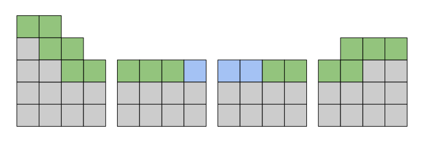
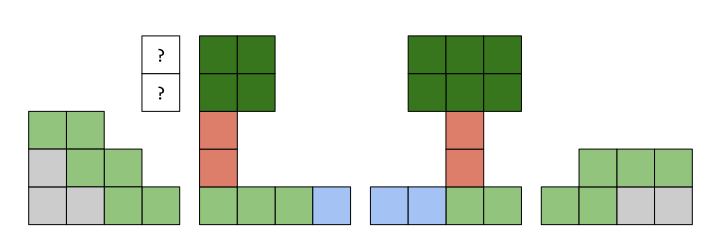
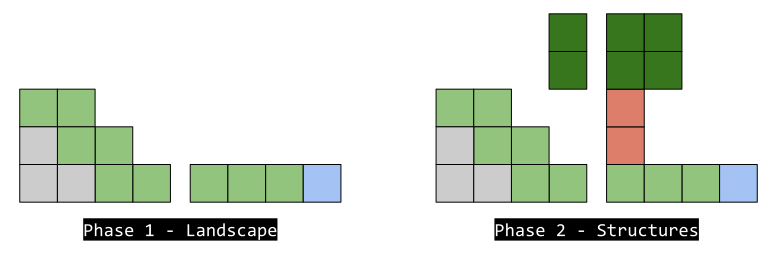
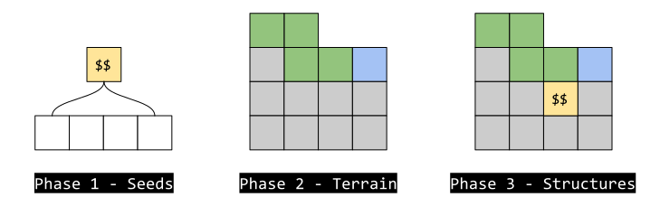
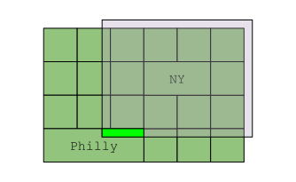

Chunk Lifecycle
Early in development, I came across an issue that seems smalled at the time. Years later, I’m still fully coming to terms with it. That issue, is the dependant lifecycle of a chunk in the context of an infinite world of chunks.
Context
Consider an infinitely large world that is generated by a simple heightmap. This world is divided into chunks, and any chunk can be generated on demand as the player moves around.

This can be managed very naively. You can generate any chunk within the area of the camera, and delete the memory as the camera moves away.
They say that land, sea, plants and trees were created on the third day, and we can generate our land and sea, so let’s try to generate a tree!

Something went wrong here. The tree on the right is fine, but the tree on the left is missing 2 blocks. While generating our chunks, we generated them from left to right. This means that when the 2nd chunk generated, and the tree it contains was generated, part of the voxels that make up the tree were in the previous chunk… but we had already created that chunk.
This is a subtle, but incredibly important detail in voxel engines, but it is not specific to trees. There are many situations where a chunk might generate something that spreads into chunks that may have been created beforehand:
- Houses or villages
- Veins of ore or springs of water
- Caves, rivers
- Entire biomes, like deserts or oceans
- Linked items, like a map to treasure
These are all called “structures” and add a layer of complexity to world generation, and in this post I hope to share some of my learnings and my approach to handling them.
Step 1 - Chunks Under Construction
The immediate solution is to just wait for the other chunks to be ready. Essentially, while generating a chunk, if we want to generate a tree that crosses into another chunk, we will wait until that other chunk has generated. We could even just generate the chunk just-in-time, when we are writing a voxel into it for the first time.
This approach is simple and does work quite well, until suddenly your entire program freezes and crashes because 2 chunks both had trees that crossed into one another. This would be even more serious when structures cross multiple chunks. To solve this, we split chunks into phases.
Step 2 - Phased Generation
Splitting chunk generation into phases is a good solution to this problem. During phase 1, we generate the terrain, as it’s independent of surrounding terrain. Phase 2 can only begin when phase 1 has been completed in the surrounding chunks - which we can also do just-in-time. We call these chunks the “Landscape” phase and the “Structures” phase.

This absolutely solves the problem. In fact, this solves the problem for quite a while.
Earlier, I mentioned the “map and treasure” issue, which is where a map will be generated in a chunk, and it will lead you to a buried treasure dozens of chunks away. To solve that with our phased generation approach, we would need to “bury” treasure during phase 1, and generate the map in phase 2… However, what if chunk containing the map is generated first?
In this case, we have no choice but to search for a treasure for that map to point to, which means running phase 1 for potentially hundreds of chunks in a radius around the map. If the generation phase takes 2ms, it could take a second or more to generate a chunk. Let’s solve this issue.
Step 3 - More Phases!
One observation is that we can decide where to bury the treasure before the actual terrain is generated. This applies to lots of structures, such as trees, caves and houses. We may still need to generate the terrain in a chunk before committing to our decision - perhaps a chunk is chosen but has no shoreline upon which to bury the treasure. That’s ok, because we can generate the landscape for that one specific chunk, and continue searching if it’s not suitable.

This is a very suitable solution in general. I’ve introduced the “seed” terminology, as all structures could be thought of as sprouting from a seed which is placed somewhere in a given chunk.
To test this solution out, let’s consider 2 sprawling villages. The first consideration is that villages spread quite far - so for any chunk to finish generating, it needs a large neighborhood of chunks surrounding it to have finished phase 1, the seeding phase. This is totally fine. Deciding whether to place a village seed in a given chunk is a fast operation, so we can run this phase for hundreds of neighboring chunks in a few milliseconds.
However, our 2 sprawling villages - let’s call them New York and Philly due to them being quite close together - suddenly introduce the same problem we had before. Generation would again depend on the order that chunks are generated. When Philly is generated first, and some of it’s buildings are generated into New York chunks, when we finally get to generating New York, some of the buildings it wants to generate would be occupied already. If we reverse our order and visit the other city first, then the same problem would apply.

This problem means our worlds are not deterministic. In fact, the most popular voxel-based game of all time suffers from this exact problem. I call this interference, and I have come up with 2 solutions to this problem.
Step 4a - Destructive Interference
My first solution was, in phase 1, generate both villages in theory. Decide where the buildings and paths and people would go, for both cities. This also applies to all other nearby neighbors - generate the blueprints of fully grown structures ahead of time.
Then have all the blueprints destructively interfere - if two buildings occupy the same area, neither building may generate. To consider other structures, you can implement a priority. For example, a building blueprint would take precedent over a tree blueprint. Two tree blueprints would nullify each other if they are too close, etc. This destruction would occur in a short phase after the seeding phase, you could consider it a phase 1b.
Step 4b - Forced Ordering
During generation, when we are running phase 1 seed placement for all neighboring chunks, we should apply those structures in a strict ordering, for example from -X to +X then -Y to +Y (or whatever your 2 horizontal dimensions are). This means that Philly will generate first, and then New York would generate second, regardless of which village was discovered first.
This solution solves our problem without adding any extra complexity or computation.
\1 Generate phase 1 seeding for a huge region of chunks \2 Collect the list of chunks that might influence the current chunk, recursively \3 Sort that list by chunk coordinate \4 Bring all of those chunks up to the next phase in that order
Conclusion
You might be realizing that this solution is not really perfect. For example, if you attempt to generate a chunk that is on the edge of a forest, it will recursively require every chunk in that entire forest to be past the seeding phase, and then will perform the expensive terrain generation phase for all of those chunks. Perfect deterministic terrain generation of inter-dependent chunks is actually a very complicated, almost untractable problem. You could realistically implement step 3 and accept the slight non-determinism.
That said, there is a perfect solution, which is an extension of “destructive intererence” that prevents the dependencies from becoming recursive, and I hope in a future post to cover that in detail.